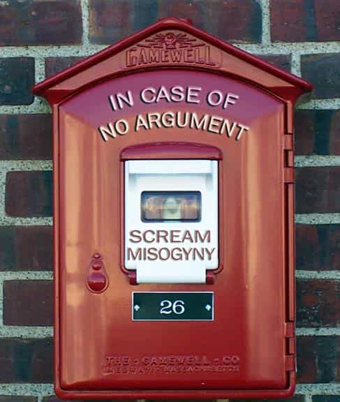
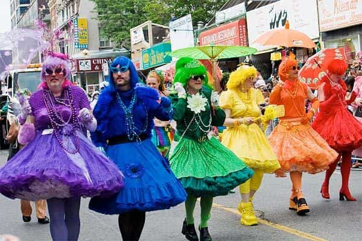
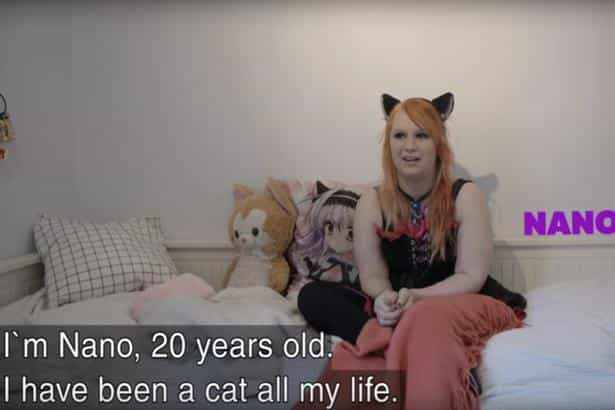
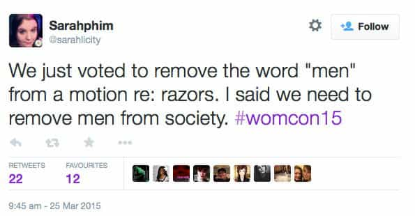

Corey is an iconoclast and the author of 'Man's Fight for Existence'. He believes that the key to life is for men to honour their primal nature. Visit his new website at primalexistence.com


Welcome to the depraved new world. Forget the books and movies, because you’re already living in a dystopia. Take a moment to familiarize yourself with the following progressive cultures of our society that will show you what a wonderful world we now live in.

Victim culture is the mother of all other social insanity that we are witnessing today.
But being a victim today is not without its perks. In one victim package you get: attention, sympathy, ego-boost, the right to censor other people, the right to attack people with impunity, freedom from criticism, financial support from the government and moronic sympathizers, an elevated status, plus other privileges. It’s no wonder so many people today are scrambling to claim their own victim status lest they find themselves at a disadvantage.
And if you ever wonder why these professional victims are so aggressive, you have to understand that victim playing is a zero-sum game where the winner is the biggest loser. There is only so much prize to be won and far too many competitors to play nice. Anyone who engages in victim Olympics must shove their opponents off the stage lest they lose the spotlight.
You know you’re living in a dystopia when cry-babies are policing your language.
We live in a toxic PC culture with an unprecedented level of control being imposed upon our daily lives.
While some of the most repulsive men and women are free to roam around naked in gay pride parades and slutwalks, scientist Matt Taylor was bullied until he apologized in tears for wearing a ‘sexist’ shirt his female friend made for him as a gift. And that’s just one of many examples of the politically correct terrorism we’re witnessing on a daily basis.
The most frightening aspect is that there is no knowing what you’ll be guilty of until it happens, for the PC police is always on the lookout for new things to get offended by and new ways to ruin your life. You are to conform and submit in fear, not knowing when or where the next blow will come.
Number of rapes has been free-falling while rape hysteria and false rape accusations are soaring.
Spreading lies about the “rape culture” is vital for the feminists to propagate their narrative of eternal victimhood. You can tell how obsessed they are with maintaining this fantasy with the way they spend more time bitching about it than doing anything to solve it, even going as far as shutting down police campaigns to prevent them.
In our infantilized society, just about everything is offensive and triggering. It can be anything from Halloween costumes, a priest in a robe, pro-Trump messages scrawled with chalk, differing opinions, to the word “upset.”
I’m surprised that social justice cowards are even able to muster up the courage to scream at people’s faces while they themselves have to snap their fingers because clapping is too triggering.
Giving tips on self-improvement? “Stop shaming me into marriage! I want to play my video games!”
Imagine yourself as an obese woman with no self-discipline. Do you:
A) Decide to be healthy by eating right and working out.
Or,
B) Bitch at everyone to accept you for who you are and call them fat-shamers if they gag in disgust from looking at your pile of lard.
“A” kind of requires effort, so…
Why am I not surprised to find out that she’s a feminist?
Everyone today is perfect and nothing is ever their fault.
“It’s not my fault I’m fat, It’s my genes.”
“I feel like a slut after having drunk sex with him. It’s not my fault, I must’ve been raped.”
“I can’t attract women because [insert your usual excuse].”
“My life sucks and it’s all because of [select favorite scapegoat: Patriarchy, big government, evil white men, feminists, discrimination, Obama, etc.].”

Sodom and Gomorrah had nothing compared to the sexual degeneracy of today. Now with homosexuality normalized and transsexuality also going mainstream, the door as flung open for all other sexual degeneracy to follow. Expect more furries, bestiality, pedophilia, and other biology-defying sexual deviance in the near future.
Feminist terror movement needs government force like fish needs water.
“Empowerment” is a code word for all the losers who desperately need to compensate for their insecurities. The truth is that the only way these leaches are able to “empower” themselves is by shoving others down while sucking off society’s sympathy and resources.
“I’m so sorry for being white, just please don’t call me a racist again!”
When the victims start oppressing their “oppressors,” the wimps among them will break down and start feeling guilty for their very existence.

Feminist role model for today’s dumb and shallow American girls. The future certainly looks sparkling.
When feminists can’t improve themselves (which is always), they need to start poisoning everyone and everything around them. This is especially prominent among the sluts who feel the need to turn all other decent women into drunken whores. Go to a feminist site like Jezebel and you’ll see how they openly teach women to corrupt themselves.

“Look! I dyed my hair blue and got retarded tattoos, now I’m unique and special like the other attention-whores!”
Everyone is so unique and special like everyone else, and we have to respect their individuality no matter how stupid and repulsive they are. If you don’t have any real accomplishments to speak of, your self-perceived uniqueness is the next best thing.

If you’re still innocent enough to think that male and female are the only sex identities, consider yourself spared. You’ll be surprised to know that we now have a dozen or more different types of sexual identities (I lost track of them after trans-whatever), along with other batshit made-up identities. Our world has gone completely insane with mentally sick individuals coming up with new ways to identify themselves just to see how low they can go.
Adults in New York paying up to $1000 to be in preschool again.
It’s not just the cry-babies in colleges who are infantilized, but the adults as well. This sort of degeneracy, along with the others on this list, only seem to be prevalent in large cities, which is why I now refuse to live in one.
Excellent photoshop job by the Canadian Socialist Republic’s Ministry of Truth.
Everything, everyone, and every space must now be enforced enriched with diversity, which is our strength (whatever that means)—everything except our political opinions, of course.

Nothing says strong and independent woman like crying to the UN for help.
Want to make easy money? Play professional victim and beg people to crowd fund you.
Is someone making fun of you on Twitter? Whine about sexism and get him censored or fired from his job.
Want to get back at your ex-lover? Cry rape and get him kicked out of school or jailed without a shred of evidence. Even if he doesn’t get convicted, his life will still be ruined.
The professional whiners of today complain that they even have to go cry to the government to receive the pampering they seek. They believe Big Brother should turn the entire society into a giant safe space while being spoiled with freebies until they die.

When identity-politics gets out of control, people start to develop knee-jerk reaction to those who they consider their enemies:
White male? “Your opinions are worthless, cis-scum. Go kill yourself.”
Skin colour is a shade browner than an Ivory soap? “Filthy muslim kebab, wait till we exterminate you.”
Not excited about having multiculturalism and pansexuality shoved down your throat? “You ignorant, Nazi piece of shit! Intolerant assholes like you need to disappear from the world!”
Not enthusiastic about putting anyone left of Pinochet into gas chambers? “I’m going to punch your mouth you cultural-Marxist filth! Calm down? Don’t try to censor me you Leftist faggot!”
Person A: “Oh, you’re just a _____-ist, so your opinions are invalid.”
Person B: “Shut up, _____-ist! You’re just delusional.”
Not only are the patients running the asylum, but they’re also diagnosing YOU with mental illness.
“You don’t like gay Muslims? Since I’m a doctor with a PhD in Social Justice, I’m going to diagnose you with homophobia and islamophobia. My treatment is going to be to shame you for your mental illness you until you shut up.”
Emasculation of men starts early in today’s America with feckless parents who enable it.
When feminists, government, and the entire culture is harping for female empowerment at the expense of men, the result should be obvious: the systematic emasculation of men at all ages. Today, men are starting to talk like women, more men are turning homosexual, and more of them are changing sex. For the wimps, when it’s too difficult to be a man, it’s far easier to just abandon ship.
It’s the only way to be sure.
I realistically don’t see any hope of peaceful return to a patriarchal (or just normal) social order even if Trump becomes dictator for life. Nothing short of violent upheaval will reverse the cultural decay we’re witnessing today. Our society is going on a downward spiral and it can’t burn down fast enough.
 If you like this article and are concerned about the future of the Western world, check out Roosh's book Free Speech Isn't Free. It gives an inside look to how the globalist establishment is attempting to marginalize masculine men with a leftist agenda that promotes censorship, feminism, and sterility. It also shares key knowledge and tools that you can use to defend yourself against social justice attacks. Click here to learn more about the book. Your support will help maintain our operation.
If you like this article and are concerned about the future of the Western world, check out Roosh's book Free Speech Isn't Free. It gives an inside look to how the globalist establishment is attempting to marginalize masculine men with a leftist agenda that promotes censorship, feminism, and sterility. It also shares key knowledge and tools that you can use to defend yourself against social justice attacks. Click here to learn more about the book. Your support will help maintain our operation.
Read More: 20 More Degenerate Cultures Of Our Dystopian Society